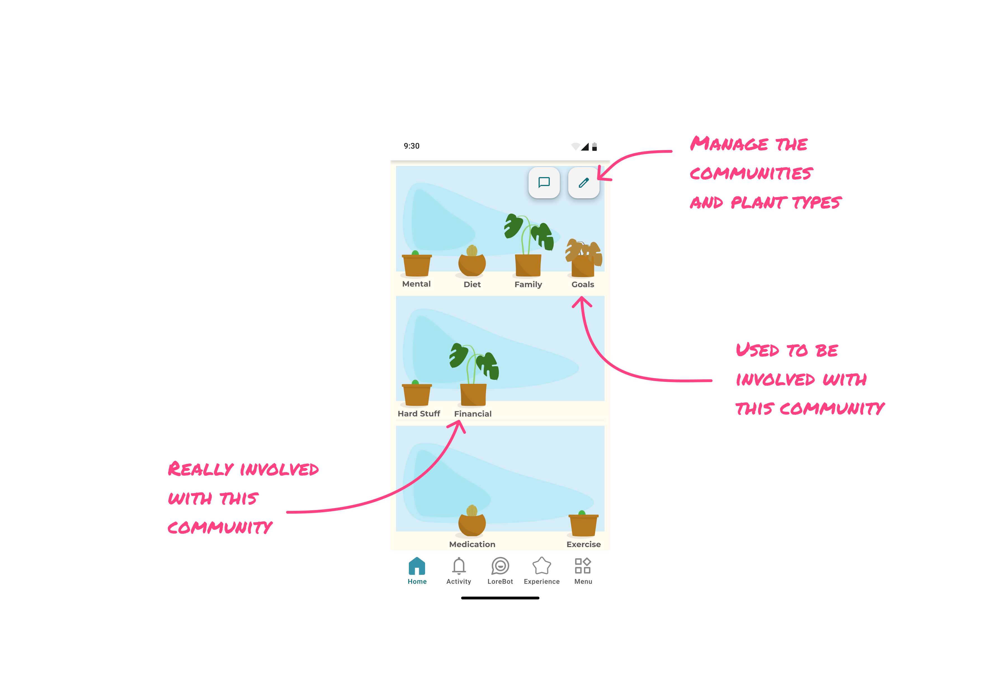
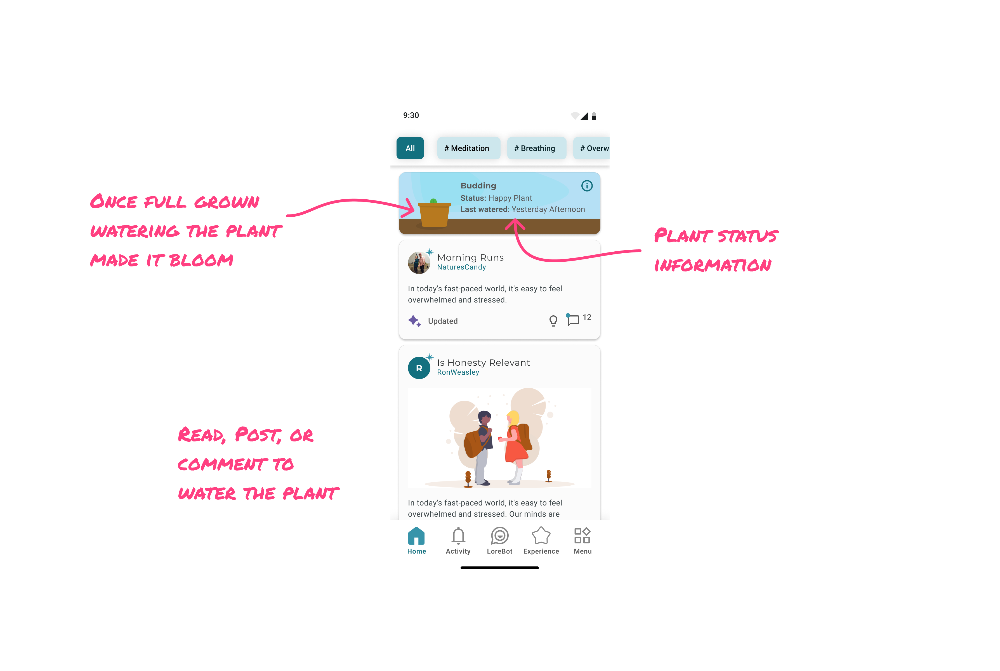
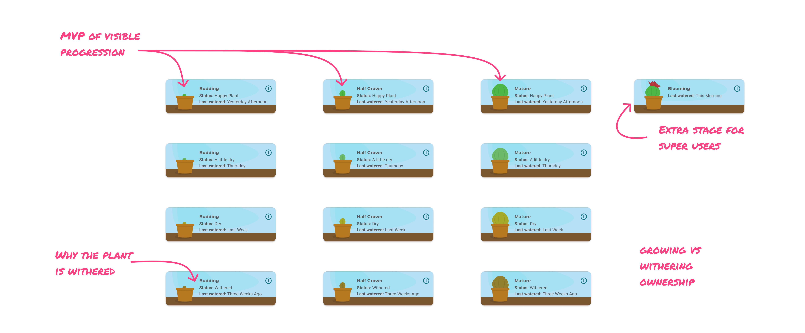

Anonymous by design — with nothing to come back for
Lore is a health community. The business works when people’s perspectives shift — when they think about their health differently and make more conscious decisions because of it. That’s the outcome every design decision has to serve.
Lore has always been anonymous. Not as protection from judgment — the community isn’t there to judge anyone, it’s there to help people be better. What anonymity does is let people loose from who they were. You aren’t accountable to the version of yourself everyone already knows, which makes it possible to challenge yourself and to let other people challenge you.
Anybody could make a Facebook group in ninety seconds and fill it with everyone they know. Having no ties is the thing you can’t get there.
The community was good at the hard part. When people posted, they posted things that were important and relevant. But engagement had been falling for months — and no posts meant no signal, so we couldn’t tell whether any intervention was working.
The work of shifting a perspective is slow, and it’s hard to know whether you’re making progress at all. Nothing in the product reflected any of it back.
The workshop: we had no so what
Falling engagement was the symptom. We weren’t trying to manufacture posts — we were trying to build a community that challenged people and stayed safe enough to bring hard things to.
I ran a design thinking workshop with the squad to find where that was breaking down. What came out of it was that the community had no so what.
Posting on Lore asks a lot. Maintaining any online presence is work; maintaining one where you say what you’re actually struggling with is more. Facebook and Instagram ask for less and pay it back instantly. We were asking for more and returning nothing — and the obvious fix was closed to us. We tried points for posting once a week, and it was a no-go for business reasons: monetary rewards were reserved for talking with LoreBot.
Matching the big platforms’ payout wasn’t the answer anyway. What we needed to reward wasn’t the post. It was the identity shift underneath it: someone deciding they’re a person who works on this, and then pushing past what they’d already decided they were comfortable with.
The question we left the workshop with: what are you working on, and how can we help?
What we already knew: levels built a hierarchy
We’d tested this engine before. Levels drove participation hard for the people they captured, and community-wide participation fell anyway. Users told us why: talking to a level 57 when you’re a level 5 is intimidating.
Worth noting that this happened on an anonymous platform. No reputations attached, no real names, no history anyone could hold against you — and a number was still enough to build a hierarchy.
Levels didn’t measure participation, they ranked people by it, permanently and publicly. In a community whose whole premise is that you can arrive without a past, a visible rank hands everyone a new one. Nobody wants to be a beginner out loud.
The motivation was real. The comparison was the problem.
Round 1: A window garden
Hypothesis. People care deeply about a couple of things at a time, and that’s where their focus goes. If we could show that — show that you were at least trying in these areas of life — it becomes an identity rather than a score. A plant is personal ownership, and a grid of them answers the workshop question on its face: this is what you’re working on.

Intervention. The themes came from our ML data team, who had already clustered the community’s content into eight of them. I piggybacked off that work rather than inventing a taxonomy — the categories were already grounded in what people were actually talking about. They sat above hubs in the hierarchy, with hubs like #Meditation or #Breathing living underneath.
Each theme got its own plant, and the plant was yours, not the group’s. It reflected whether you were engaging with that theme. It fit a gardening metaphor the product already used, so we could introduce it without teaching a new language.
Eight plants said something a single number can’t: I’m working on Hard Stuff and Family, and I’ve set Medication aside for now. That’s a self-description. It also put people in proximity to what they were working on — including the themes they’d been avoiding.
The decay states did the work levels couldn’t. A number that only goes up becomes a credential; a plant that can wilt or get shelved can only describe right now, so it can’t harden into status. Shelved meant quietly archived as something that isn’t relevant to you at the moment — not punished. Legible without pressure.
What happened. The idea landed with the squad. But tracking a plant state for every user across every theme was a far heavier build than a single shared indicator. We lost our frontend engineer mid-project, and the system was too complex to ship responsibly.
We shelved it ourselves. Not because the idea was wrong, but because shipping it badly would have meant cutting corners on something meant to feel personal. Good ideas still have to survive reality, and letting go of one is a design decision, not a failure of one.
Round 2: One plant per person
Hypothesis. What’s the smallest version of this we could still ship — one plant per person, reflecting their participation?

Intervention. Reading, commenting, or posting all watered it. The plant grew over time and eventually bloomed.

We kept that logic hidden from users. Surfacing thresholds turns a plant into a scoreboard, and a scoreboard is a target — the same failure mode as levels, one step removed. Hidden, growth arrives as a pleasant surprise.
We also tuned it generously. Staying happy was easy, because the plant’s job was to reflect that you were around, not to grade you. Once a plant was fully grown, any action on top of that bloomed it for a day — a small recurring reward for people already in the habit, with nothing left to climb toward.
The cut kept the plant personal. It gave up the part that made growth mean something specific. With eight plants, watering required engaging with a theme you’d chosen; with one, every action waters the same thing. We traded precision for shippability, and we knew it. We didn’t know yet what the trade would cost.
What worked. People took to it. The plant was theirs, they’d had nothing like it before, and they tended it — reading, commenting, coming back to a thing that reflected them. Posts came back up, which mattered mostly because it meant we could see again.
What didn’t. What we saw was that some of that tending had nothing to do with working on themselves. People posted to grow the plant.
Ownership landed. That was never in question — they owned it completely, which is exactly the problem. A single plant can only reflect that you did something, so the identity it offered was I’m someone who shows up here, not I’m someone working on this. Tending it became its own pursuit, separable from the reason anyone came.
That wasn’t ownership backfiring. It was the bill for the scope cut arriving. With eight plants, the thing you owned was a description of yourself. With one, the thing you owned was a tally. An identity can’t be gamed. A tally can.
Learning
Levels failed because the signal was public and comparative — it made a hierarchy out of a number in a community that had no other status markers. The single plant failed because the signal was generic.
Same error, different clothes: what got measured drifted from what we wanted more of. Levels measured standing. The single plant measured showing up. The themed plants were the only version that measured what someone was working on, and that’s the version we couldn’t build.
If you want people to own an identity, the thing they own has to describe them. Give them a tally instead and they’ll own the tally.